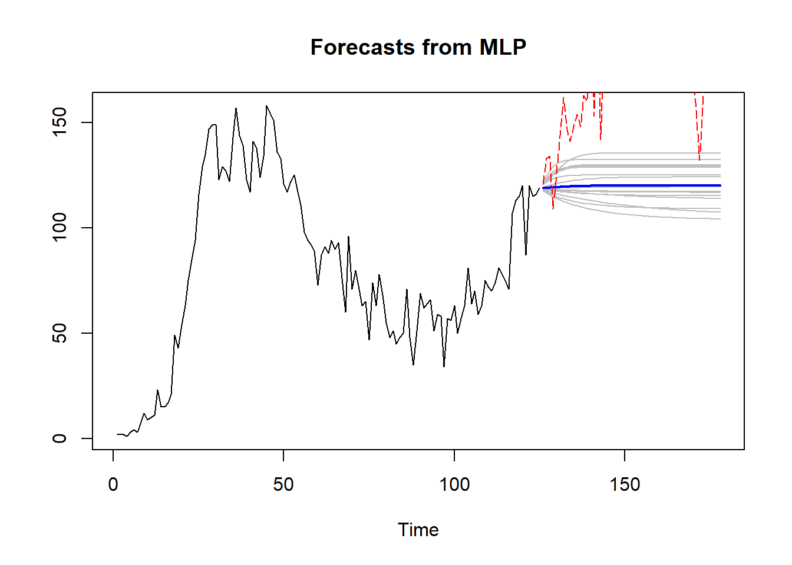

8 Pronóstico de decesos diarios
De manera similar a la evaluación llevada a cabo en la base de datos de los casos confirmados de COVID-19 en Irán, se ejecutó un análisis para los datos de muertes por COVID-19 en Irán, abarcando el mismo período temporal, desde el 20 de febrero hasta el 15 de agosto de 2020. El propósito fue determinar si, de forma análoga, la red neuronal MLP demuestra un mejor ajuste a los datos en comparación con la técnica de series temporales Holt-Winters, o si, en este caso particular, la técnica Holt-Winters ofrece una mayor precisión.
Es relevante señalar la presencia de datos faltantes para las fechas 21 de febrero, 1 de marzo y 5 de mayo de 2020 en el conjunto de datos. Por consiguiente, al igual que en los casos confirmados, se procedió con una interpolación promedio para sustituir dichos datos faltantes. La Figura 8.1 exhibe la serie temporal resultante luego de estas correcciones.
8.1 Pronóstico, comparación y métricas de rendimiento
La evaluación del desempeño de los métodos se realiza a través de la separación del conjunto de datos en entrenamiento y prueba. El set inicial, compuesto por el \(70\%\) de los datos, se emplea para el entrenamiento de los modelos, mientras que el \(30\%\) restante se reservará para llevar a cabo las pruebas pertinentes.
Código
Deaths_ts <- ts(Deaths_ts,frequency=1)
tsize <- round(0.7 * nrow(Deaths_df))
train_deaths <- window(Deaths_ts,end=tsize)
test_deaths <- window(Deaths_ts,start=tsize+1)Con el propósito de llevar a cabo un análisis cuantitativo exhaustivo, se presenta a continuación una tabla comparativa de los resultados derivados de las dos técnicas implementadas (después de realizar el entrenamiento, modelado y pronóstico), y la base de datos de prueba. Posteriormente, se exhiben gráficas representativas de estos resultados. En la Figura 8.2 se muestra el pronóstico mediante Holt-Winters acompañado de su respectivo intervalo de confianza. En contraste, en la Figura 8.3, la gráfica punteada en color rojo representa el comportamiento real de los datos, mientras que en azul se representa el pronóstico obtenido a través de la red MLP.

A través de las Figura 8.2 y Figura 8.3, se observa que el pronóstico derivado de la técnica Holt-Winters muestra una mayor proximidad al comportamiento de la gráfica real.
Utilizando las métricas RMSE, MAE y MAPE, se lleva a cabo la evaluación de la calidad o bondad de ajuste de los métodos empleados en este estudio con el fin de seleccionar el modelo más adecuado.
| Training | Testing | |||||
| RMSE | MAE | MAPE | RMSE | MAE | MAPE | |
| Holt-Winters | 12.6365 | 9.6103 | 19.4096 | 34.0665 | 25.5356 | 12.9770 |
| MLP | 11.7584 | 8.8446 | 15.6144 | 67.2031 | 59.7811 | 49.0686 |
Los resultados derivados de la tabla de errores (Tabla 8.2) llevan a la conclusión de que, en esta base de datos específica, a pesar de que la red MLP exhibe errores más reducidos durante la fase de entrenamiento, la técnica de Holt-Winters presenta un error considerablemente menor en la etapa de prueba en comparación con MLP. Esto evidencia su mayor eficacia en la predicción realizada. Por consiguiente, se recomienda el uso del método Holt-Winters para llevar a cabo el pronóstico de los próximos 30 días.
8.2 Pronóstico de los próximos 30 días
Tras la identificación del modelo óptimo, se procedió a prever el comportamiento futuro de la serie temporal de casos de muerte para los próximos 30 días utilizando dicho modelo. Se elaboraron representaciones gráficas de la predicción de estos casos, realizando una comparación de la efectividad entre las implementaciones de redes neuronales en la paquetería de R y la paquetería nativa de Python, las cuales se encuentran en las figuras Figura 8.4 y Figura 8.5, respectivamente.
8.2.1 Implementación en R
Código
HW_deaths <- HoltWinters(ts(Deaths_df$Deaths,frequency = 2))
HW_for_d <- forecast(HW_deaths, h=30, level=c(80,95)) Los resultados del pronóstico indican que el 14 de septiembre de 2020 se proyectan 184 nuevos casos de muerte por COVID-19. Estos valores correspondientes al período de 30 días se detallan a continuación en la Tabla 8.3 .
8.2.2 Implementación en Python
Los resultados del pronóstico en la Figura 8.5 indican que el 14 de septiembre de 2020 se proyectan aproximadamente 132 nuevos casos de muerte por COVID-19.